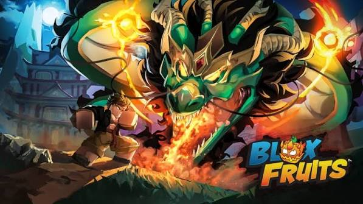

Diário do Chapéu de Palha: Jogando Blox Fruits
Muitos jogadores iniciantes cometem o erro de ignorar a fruta Rocket (Foguete) só por ela ser a mais barata e comum do jogo. No entanto, quando analisamos o custo-benefício e a diversão, a Rocket se destaca como uma das opções mais surpreendentes de Blox Fruits.